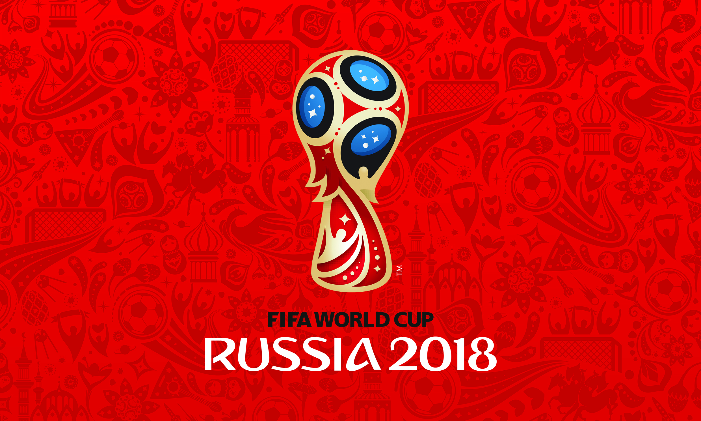

The FIFA World Cup, often simply called the World Cup, is an international association football competition
contested by the senior men's national teams of the members of the Fédération Internationale de Football Association (FIFA). It has been held every 4
years since the inaugural tournament in 1930, except in 1942 and 1946 when it was not held because of the Second World War. The 21 World Cup tournaments
have been won by eight national teams. Brazil have won five times, and they are the only team to have played in every tournament. The other World Cup
winners are Germany and Italy, with four titles each; Argentina, France and Uruguay, with two titles each and England and Spain,
with one title each.
The World Cup is the most prestigious football tournament in the world, as well as the most widely viewed and followed
sporting event in the world, exceeding even the Olympic Games. The cumulative viewership of all matches of the 2006 World Cup was estimated to be 26.29
billion with an estimated 715.1 million people watching the final match, a ninth of the entire population of the planet.
The world's first international football match was a challenge match played in Glasgow in 1872 between Scotland and England,
which ended in a 0–0 draw. The first international tournament, the inaugural British Home Championship, took place in 1884.
After FIFA was founded in 1904, it tried to arrange an international football tournament between nations outside the Olympic
framework in Switzerland in 1906. These were very early days for international football, and the official history of FIFA describes
the competition as having been a failure. In 1914, FIFA agreed to recognise the Olympic tournament as a "world football championship
for amateurs", and took responsibility for managing the event. This paved the way for the world's first intercontinental football
competition, at the 1920 Summer Olympics, contested by Egypt and 13 European teams, and won by Belgium. Uruguay won the next two Olympic
football tournaments in 1924 and 1928. Those were also the first two open world championships, as 1924 was the start of FIFA's professional era.
From 1930 to 1970, the Jules Rimet Trophy was awarded to the World Cup winning team. It was originally simply known as the World Cup or
Coupe du Monde, but in 1946 it was renamed after the FIFA president Jules Rimet who set up the first tournament. In 1970, Brazil's third victory
in the tournament entitled them to keep the trophy permanently. However, the trophy was stolen in 1983 and has never been recovered, apparently
melted down by the thieves.
After 1970, a new trophy, known as the FIFA World Cup Trophy, was designed. The experts of FIFA, coming from seven countries, evaluated the 53
presented models, finally opting for the work of the Italian designer Silvio Gazzaniga. The new trophy is 36 cm high, made of solid 18 carat
gold and weighs 6.175 kg. The base contains two layers of semi-precious malachite while the bottom side of the trophy bears the
engraved year and name of each FIFA World Cup winner since 1974.
 |
 |
| Jules Rimet Trophy |
FIFA World Cup Trophy |